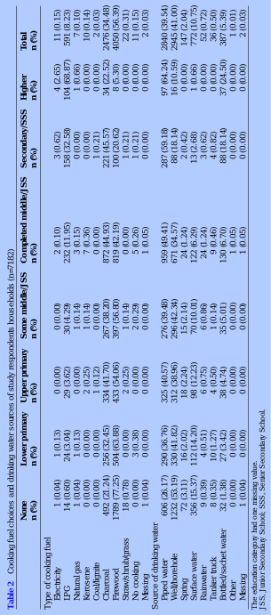
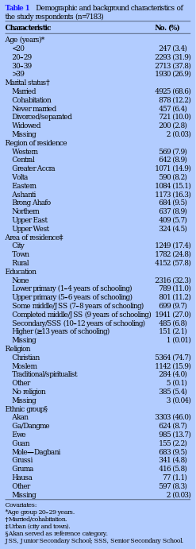

|

corpus-oa-validation/10.1136_bmjopen-2016-012348/tables/table2/table.svg.png
|
corpus-oa-validation/10.1136_bmjopen-2016-012348/tables/table2/table.svg.html
|

corpus-oa-validation/10.1136_bmjopen-2016-012348/tables/table4/table.svg.png
|
| Education |
Unadjusted OR (95% CI) |
Model 1: core covariates* OR (95% CI) |
+ biomass fuel use OR (95% CI) |
+ unsafe water consumption OR (95% CI) |
fuel use and unsafe water consumption OR (95% CI) |
| None |
1.08 (0.73 to 1.59) |
1.19 (0.78 to 1.82) |
|
|
|
| Lower primary |
1.51 (0.98 to 2.33) |
1.62 (1.04 to 2.52) |
1.51 (0.95 to |
1.57 (1.00 to 2.47) |
1.47 (0.92 to 2.37) |
|
|
|
2.41) |
|
|
| Upper primary |
0.86 (0.53 to 1.38) |
0.98 (0.60 to 1.60) |
|
|
|
| Some middle/JSS |
1.10 (0.69 to 1.76) |
1.26 (0.78 to 2.02) |
|
|
|
| Completed middle/ |
1.06 (0.72 to 1.58) |
1.11 (0.74 to 1.65) |
|
|
|
| JSS |
|
|
|
|
|
| Secondary + |
1.00 |
1.00 |
1.00 |
1.00 |
1.00 |
corpus-oa-validation/10.1136_bmjopen-2016-012348/tables/table4/table.svg.html
|

corpus-oa-validation/10.1136_bmjopen-2016-012348/tables/table3/table.svg.png
|
| None n (%) |
Lower primary n (%) |
Upper primary n (%) |
Some middle/ JSS n (%) |
Completed middle/ JSS n (%) |
Secondary/ SSS n (%) |
Higher n (%) |
Total N (%) |
| Gravidity |
|
|
|
|
|
|
|
| Primigravida |
|
|
|
|
|
|
1029 (14.3) |
| Multigravida |
|
|
|
|
|
|
6154 (85.7) |
| Lifetime stillbirth experience |
|
|
|
|
|
|
|
| No |
|
|
|
|
|
|
|
| 2183 (32.3) |
727 (10.8) |
764 (11.3) |
658 (9.7) |
1831 (27.1) |
458 (6.8) |
144 (2.1) |
6766 (94.2) |
| Yes |
|
|
|
|
|
|
|
| 133 (31.9) |
62 (14.9) |
37 (8.9) |
41 (9.8) |
110 (26.4) |
27 (6.5) |
7 (1.7) |
417 (5.8) |
| No. of stillbirths in lifetime |
|
|
|
|
|
|
|
| One |
|
|
|
|
|
|
|
| 114 (31.3) |
54 (14.8) |
30 (8.2) |
37 (10.2) |
99 (27.2) |
23 (6.3) |
7 (1.9) |
364 (87.3) |
| Two or more |
|
|
|
|
|
|
|
| 19 (35.9) |
8 (15.1) |
7 (13.2) |
4 (7.6) |
11 (20.8) |
4 (7.6) |
0 (0.0) |
53 (12.7) |
corpus-oa-validation/10.1136_bmjopen-2016-012348/tables/table3/table.svg.html
|
|

corpus-oa-validation/10.1136_bmjopen-2016-012348/tables/table1/table.svg.png
|
| Characteristic |
No. (%) |
| Age (years)* |
|
| <20 |
247 (3.4) |
| 20–29 |
2293 (31.9) |
| 30–39 |
2713 (37.8) |
| >39 |
1930 (26.9) |
| Marital status† |
|
| Married |
4925 (68.6) |
| Cohabitation |
878 (12.2) |
| Never married |
457 (6.4) |
| Divorced/separated |
721 (10.0) |
| Widowed |
200 (2.8) |
| Missing |
2 (0.03) |
| Region of residence |
|
| Western |
569 (7.9) |
| Central |
642 (8.9) |
| Greater Accra |
1071 (14.9) |
| Volta |
590 (8.2) |
| Eastern |
1084 (15.1) |
| Ashanti |
1173 (16.3) |
| Brong Ahafo |
684 (9.5) |
| Northern |
637 (8.9) |
| Upper East |
409 (5.7) |
| Upper West |
324 (4.5) |
| Area of residence‡ |
|
| City |
1249 (17.4) |
| Town |
1782 (24.8) |
| Rural |
4152 (57.8) |
| Education |
|
| None |
2316 (32.3) |
| Lower primary (1–4 years of schooling) |
789 (11.0) |
| Upper primary (5–6 years of schooling) |
801 (11.2) |
| Some middle/JSS (7–8 years of schooling) |
699 (9.7) |
| Completed middle/JSS (9 years of schooling) |
1941 (27.0) |
| Secondary/SSS (10–12 years of schooling) |
485 (6.8) |
| Higher (≥13 years of schooling) |
151 (2.1) |
| Missing |
1 (0.01) |
| Religion |
|
| Christian |
5364 (74.7) |
| Moslem |
1142 (15.9) |
| Traditional/spiritualist |
284 (4.0) |
| Other |
5 (0.1) |
| No religion |
385 (5.4) |
| Missing |
3 (0.04) |
| Ethnic group§ |
|
| Akan |
3303 (46.0) |
| Ga/Dangme |
624 (8.7) |
| Ewe |
985 (13.7) |
| Guan |
155 (2.2) |
| Mole— Dagbani |
683 (9.5) |
| Grussi |
341 (4.8) |
| Gruma |
416 (5.8) |
| Hausa |
77 (1.1) |
| Other |
597 (8.3) |
| Missing |
2 (0.03) |
corpus-oa-validation/10.1136_bmjopen-2016-012348/tables/table1/table.svg.html
|